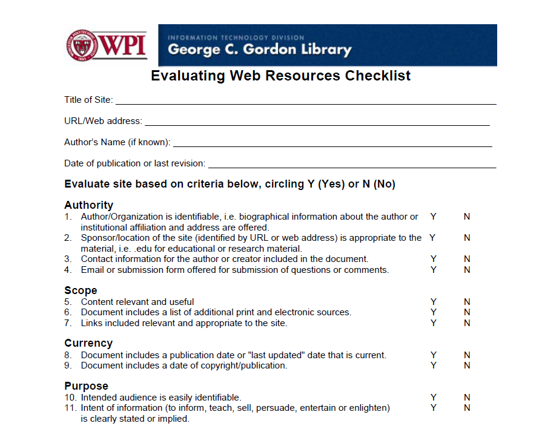
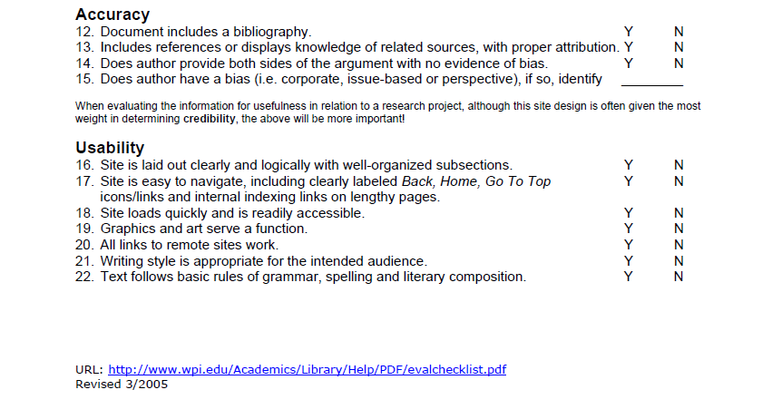
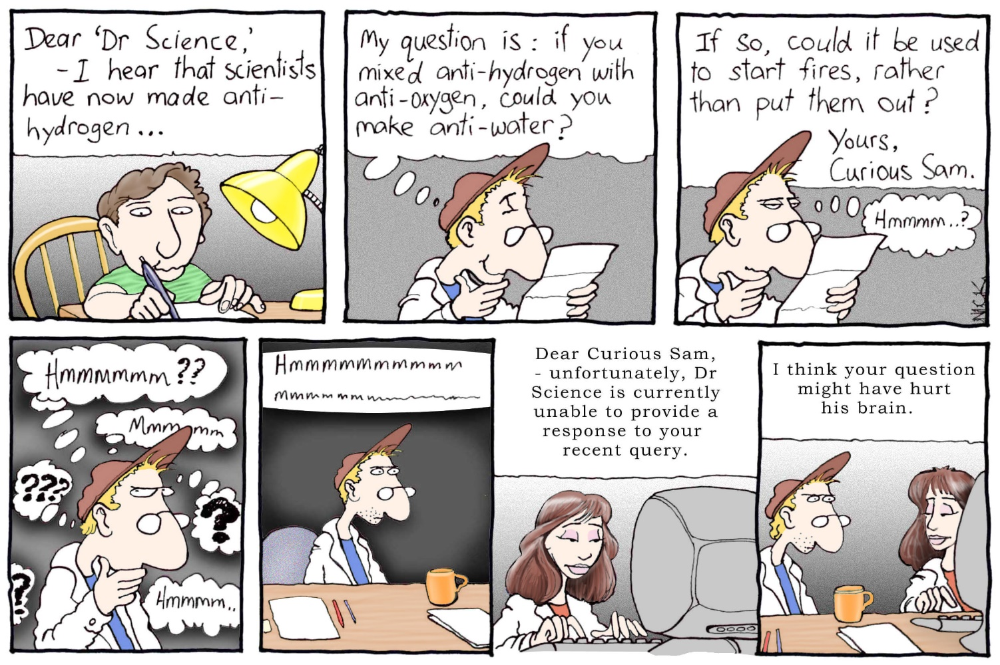

Every experiment centres on a question or problem. Most experiments require time to complete, so selecting a question that is interesting to investigate or a problem that is satisfying to solve is important. Your question or problem must also be specific enough to allow you to obtain results from a simple experiment. Before beginning an experiment, researchers investigate the topic surrounding the question -- not only to learn more about the subject area, but to ensure the question has not already been answered by someone else. In many cases, doing this type of research may change or refine the focus of an experiment.
Background information is also important because you may learn about the techniques and equipment others have used in similar experiments. Remember, it is better to learn from the experience of others and avoid their mistakes.
Regarding background research, please review the five rules of Better Internet Searching Techniques and how best to Evaluate Web Resources in the next two sections.
Effective Internet Search Techniques
Five Rules for Better Searches!
Use Google http://www.google.ca
Rules
E.g., If you want information on rainbow trout, be sure to use both words, rainbow and trout, and not fish!
E.g., If you want information on rainbow trout, and you want the two words next to each other in the results, type “rainbow trout” in Google search.
E.g., If you want information on rainbow trout recipes, be sure to add +recipes to the search. You would type in the search engine… “rainbow trout” +recipes.
E.g., If you want information on rainbow trout, but not fishing, make sure you type in -fishing to the search. You would type in… “rainbow trout” -fishing.
E.g., If you want information on rainbow trout recipes but not fishing, you would type in … “rainbow trout” +recipes -fishing.
(Adapted from Literacy and Learning Day 2007 - Cynthia Peterson)


Example: You and your friends want to find out if sleep deprivation affects the response time of drivers, specifically the time between seeing a road hazard and applying the brakes. A little investigation into this topic will reveal that other researchers have already explored this issue. You might want to modify your question and instead try to determine if the level of stomach fullness (satiation) affects the response time of drivers. Does eating a large meal affect driver response time?
When selecting a topic for investigation, you might refer to the checklist below. You will want to answer "yes" to all the questions.
Example of a Good Chemistry Question:
